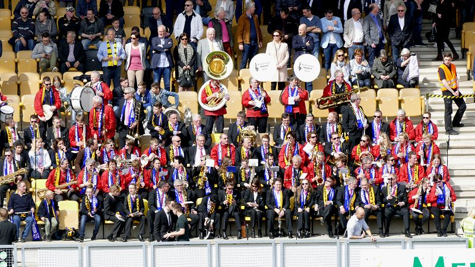
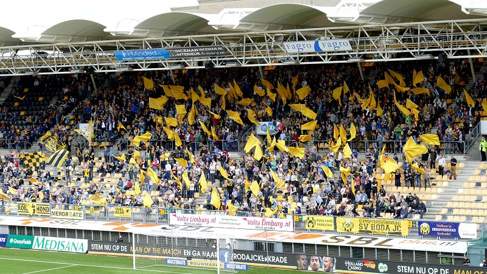
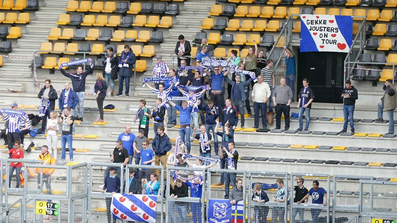
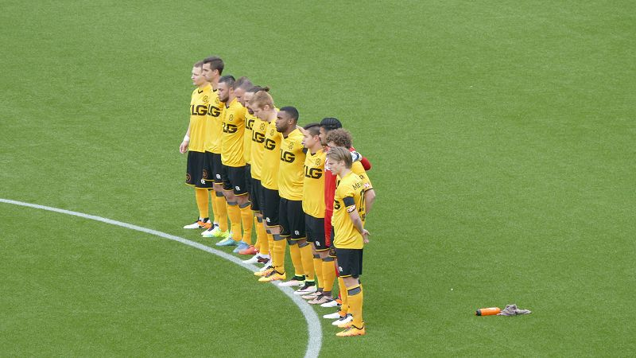
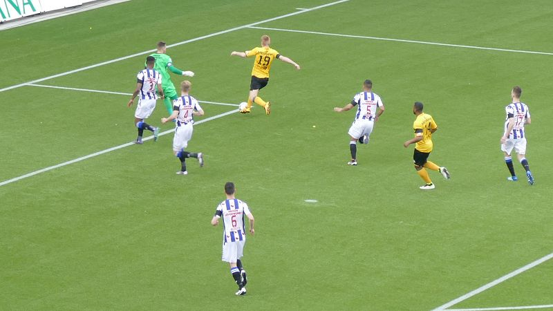
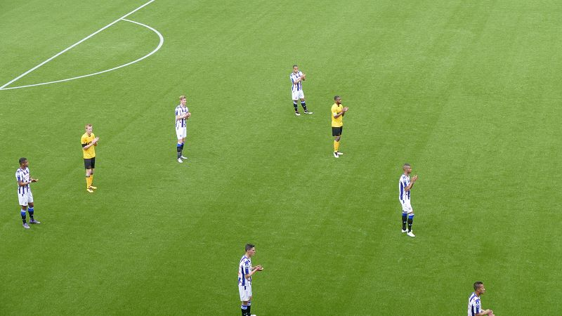
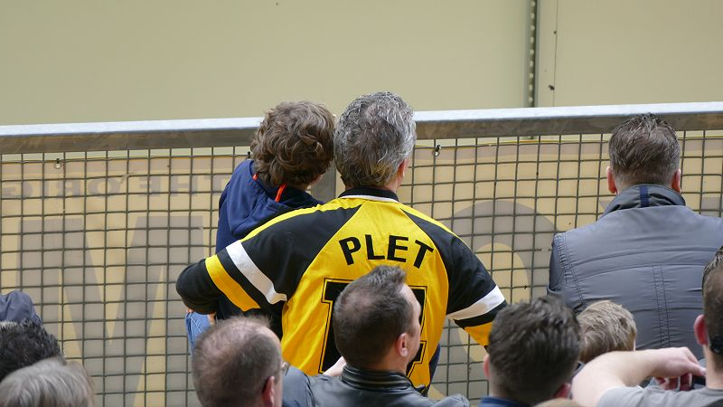
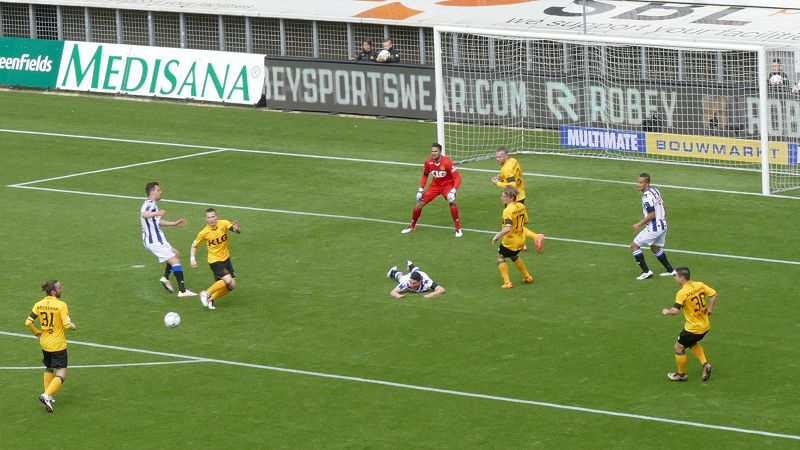
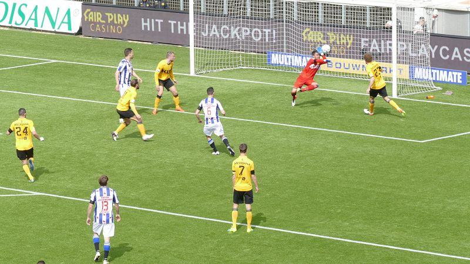

Niet het Kaalheide huisorkest maar de harmonie van Nieuwenhagen plus de
fanfare van Akkrum "verblijdden" het publiek muzikaal vanaf de noordzijde.
Ruim 15.000 toeschouwers.

Ook oost is goed bezet.

Heerenveen heeft 50 supporters mee (exclusief de voornoemde fanfare uit
Akkrum).

Voor aanvang van de wedstrijd is er een minuut stilte voor de recent
overleden Johan Cruyff.

Van Duinen duikt meteen het strafschopgebied binnen maar weet doelman Mulder
niet te omspelen.

In de 14e minuut is er een applaus voor Johan Cruyff.

Hoe retro kan je zijn?

Roda ontsnapt bij een aanval van Heerenveen als spits Marzo uitglijdt.

Marzo schiet recht op de vuisten van Van Leer.

Noor, St.Juste en Marzo.

Zeneli kopt bij de tweede paal een prima voorzet van Slagveer binnen: 0-1,
(51').

Nadat invaller Peterson door het centrum dribbelt en de bal tegen de
binnenkant van de paal schiet kan Van Hyfte uit de rebound simpel
binnentikken: 1-1, (66').

Poepon schiet op de paal.

In de extra tijd neemt Van den Boomen een vrije trap.

BAM... : 1-2, (92') net als tegen Vitesse loopt Roda in de extra tijd tegen
Heerenveen een domme nederlaag op.


Opdat we niet vergeten.

De betere merchandise vind je op de hoek van zuid/west.
Doelpunten:
[51] Arber Zeneli 0-1
[66] Tom van Hyfte 1-1
[90+2] Branco van den Boomen 1-2
Rode kaart:
Gele kaart:
[4] Tom van Hyfte
[44] Martin Milec
[65] Mitchell Te Vrede
[69] Jordy Buijs
[90+1] Lucas Bijker
[90+2] Arjan Swinkels
Roda JC Kerkrade:
Trainer: Darije Kalezic
Opstelling :
1. Benjamin van Leer, 3. Jordy Buijs, 5. Ard van Peppen, 7. Tom van Hyfte,
14. Rydell Poepon, 17. Henk Dijkhuizen, 19. Mike van Duinen, 23. Arjan
Swinkels, 24. Farshad Noor, 30 Georgy Zhukov, 31. Ugur Inceman.
Bank:
21. Bram Verbist, 4. Rostyn Griffiths, 6. Nathan Rutjes, 9. Tomi Juric, 11.
Kristoffer Peterson, 15. Maecky Ngombo, 16. Marcos Gullón .
Wissels :
[54] Ard van Peppen voor Henk Dijkhuizen
[54] Kristoffer Peterson voor Farshad Noor
[80] Tomi Juric voor Mike van Duinen
SC Heerenveen:
Trainer: Foppe de Haan
Opstelling:
1. Erwin Mulder, 3. Kenneth Otigba, 4. Joost van Aken, 5. Lucas Bijker, 6.
Stefano Marzo, 7. Luciano Slagveer, 9. Mitchell te Vrede, 11. Sam Larsson,
13. Arber Zeneli, 6. Jeremiah St. Juste, 17. Branco van den Boomen.
Bank:
33. Maarten de Fockert, 8. Morten Torsby,14. Robert van Koesveld, 15. Luka
Zahovic, 20. Henk Veerman, 22. Carner Cavlan, 25. Willem Huizing,
Wissels:
[70] Willem Huizing voor Stefano Marzo
[80] Moirten Torsby voor Sam Larsson
[87] Carner Cvlan voor Jeremiah St. Juste
Scheidsrechter: Bjorn Kuipers
Assistent scheidsrechter: Sander van Roekel
Assistent scheidsrechter: Erwin Zeinstra
Vierde official:: Martin Pérez
Toeschouwers: 15.259